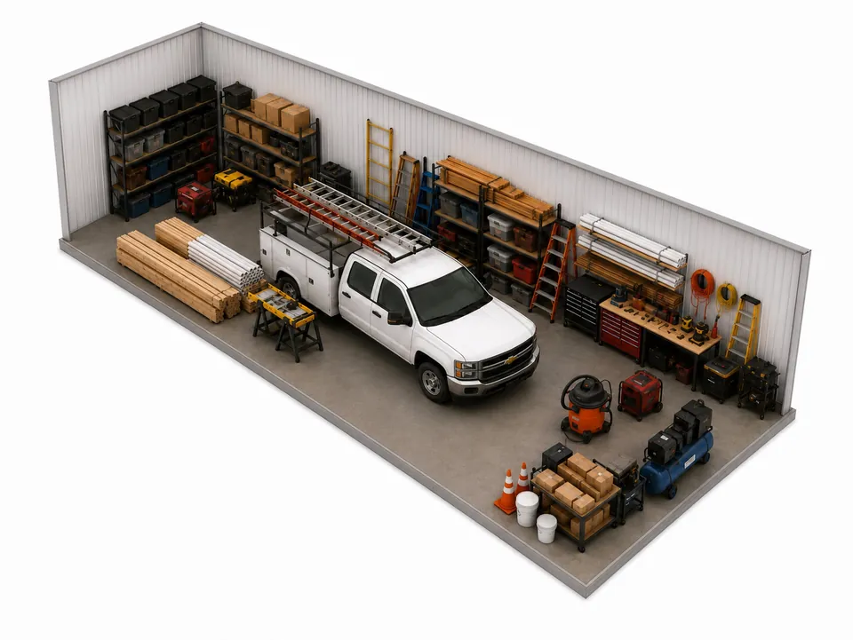

Storage Solutions for Reno County Homeowners
Garage overflow, equipment, boats and estates, matched to real sizes and prices at both locations.

Owning a house in Reno County tends to mean owning what goes with it: a mower, a tiller, a trailer, a boat for the summer and, sooner or later, a parent’s furniture. This guide matches the common homeowner situations to the actual unit sizes and monthly prices at our two locations, 2511 E 17th Ave in Hutchinson and 712 N Walnut St in South Hutchinson. Every unit is ground-level and drive-up with a roll-up door, and every unit is insulated. None are climate-controlled. Prices here are the regular rates at the time of writing and can change, so check current rates before you decide.
The Garage and Shed That No Longer Close
If the goal is to park a car in the garage again, you are mostly moving things you use a few times a year: holiday totes, camping gear, bikes, the spare mattress, furniture waiting for a kid’s first apartment. A 5×10 is the size of a walk-in closet and holds a mattress and box spring, a dresser, bikes and a stack of boxes. It is $65 a month in Hutchinson and $55 in South Hutchinson.
If the shed is emptying out too, a 10×10 holds about what a one-bedroom apartment does, including a sofa, a dining set and a washer and dryer. That is $95 in Hutchinson and $65 in South Hutchinson. Hutchinson also has an 8×10 at $85 for loads that fall in between.

Mowers, Tillers and Farm Equipment
Riding mowers, zero-turns, tillers, ATVs and implements take up floor, not height, so think in footprints. Because every unit is drive-up, you can ramp equipment off a trailer and straight through the door.
- 10×15 ($105 Hutchinson, $75 South Hutchinson): a riding mower, a tiller and the rest of the yard equipment, with wall space left for shelving.
- 10×20 ($125 Hutchinson, $105 South Hutchinson): the size of a one-car garage. Room for a small vehicle or motorcycle alongside yard equipment.
- 10×30 ($155, Hutchinson only): a car or large equipment.
- 15×30 ($190, South Hutchinson only): heavy equipment that needs width as well as depth.
Before winter storage, drain the fuel or run the engine dry, change the oil, disconnect the battery and wash off grass and mud, which hold moisture against steel. Leave fuel cans and propane cylinders at home.
A Boat or Trailer Over Winter
Winter cold, spring hail and summer sun are all hard on a boat left in the driveway. To store one indoors you need a unit longer than the whole rig, so measure from the tip of the trailer tongue to the back of the motor. Measure the width at the widest point, usually the trailer fenders, and the height too.
- 10×25 ($145, Hutchinson): the smallest unit we suggest for a boat.
- 10×30 ($155, Hutchinson): a longer boat, or a car.
- 15×30 ($190, South Hutchinson): a boat or large vehicle, with five more feet of width.
- 15×40 ($250, South Hutchinson): multiple vehicles or a large RV.
- 20×40 ($350, South Hutchinson): the largest unit we have, for multiple large vehicles.
A door opening is narrower and lower than the unit behind it, so call (620) 662-7336 with your measurements before you rent. Winterize the motor, pull the drain plug, take the battery home and chock the trailer wheels. The optional tenant protection plan lists damage to a stored vehicle, boat or trailer among its coverages.

Downsizing or Clearing an Estate
Moving a parent out of a longtime home, or settling an estate, rarely happens on the schedule a house sale wants. A unit lets you empty the house now and sort later. Month-to-month renting suits this, because nobody knows at the start whether it will take two months or ten.
A 10×15 holds a two-bedroom apartment and a 10×20 holds a two- or three-bedroom house. In Hutchinson, the 10×25 takes a three-bedroom house and the 10×30 a house with four or more bedrooms. For a full house plus a shop, the 15×30 in South Hutchinson is one large unit in place of two smaller ones.
Three things to settle early:
- Take the valuables and papers out first. Jewelry, watches, cash, firearms, deeds, titles and family records should go to a family member or a safe deposit box. The protection plan does not cover them, and antiques and furs are excluded as well.
- Sort as you load. Keep one wall for things family members have claimed and one for things to sell or donate, and label each box with the room it came from.
- Decide who holds the rental. One person signs the lease and pays through the online portal, so agree on that before the truck is loaded.
Our long-term storage tips cover pallets, labels and a photo inventory, which help when several relatives need to find things.
Sizes and Regular Monthly Prices by Location
Hutchinson, 2511 E 17th Ave
- 5×10: $65
- 8×10: $85
- 10×10: $95
- 10×15: $105
- 10×20: $125
- 10×25: $145
- 10×30: $155
This location has a perimeter fence and gated entry.
South Hutchinson, 712 N Walnut St
- 5×10: $55
- 10×10: $65
- 10×15: $75
- 10×20: $105
- 15×30: $190
- 15×40: $250
- 20×40: $350
South Hutchinson is across the Arkansas River from Hutchinson, and it is where the three largest units are. Both locations have cameras recording 24/7 and lighting on every aisle and entry point, described on the security page.
Renting and Paying
You can rent from a phone or laptop: pick a location and a unit, sign the lease, pay and get access right away. Rent is month-to-month, paid by card, Cash App or ACH through the tenant portal, and a free lock comes with the unit. Active duty military, veterans and first responders get 15% off.
Frequently Asked Questions
What size storage unit do I need for a boat and trailer?
Measure the full length from the trailer tongue to the back of the motor, then choose a unit longer than that. At Reno County Storage, the 10×25 and 10×30 units in Hutchinson and the 15×30, 15×40 and 20×40 units in South Hutchinson are the sizes suited to boats and vehicles. Call (620) 662-7336 with your measurements before you rent.
How much does a storage unit cost in Hutchinson, Kansas?
At the time of writing, units at 2511 E 17th Ave in Hutchinson run from $65 a month for a 5×10 to $155 for a 10×30. Units at 712 N Walnut St in South Hutchinson run from $55 for a 5×10 to $350 for a 20×40. Prices can change, so check the current rates on the locations page.
Can I store a riding lawn mower or farm equipment in a storage unit?
Yes. All units are ground-level and drive-up, so equipment can be rolled or ramped in. Drain the fuel, disconnect the battery and clean the equipment first, and do not store fuel cans or propane cylinders.
Where can I find a large storage unit near Hutchinson, KS?
The South Hutchinson location at 712 N Walnut St has 15×30, 15×40 and 20×40 drive-up units at $190, $250 and $350 a month at the time of writing. The largest unit at the Hutchinson location on E 17th Ave is a 10×30.
Is a storage unit a good place to keep an estate’s valuables and documents?
No. Furniture and household goods store well, but jewelry, cash, firearms, antiques and important documents should be kept somewhere else. The tenant protection plan does not cover those items.
Rent online at Hutchinson or South Hutchinson, or compare sizes first with the size guide. For help matching a unit to a boat, a trailer or a houseful of furniture, call (620) 662-7336.
More from the Blog
How Self Storage Helps During a Home Renovation
Protect your furniture and give your contractors room to work. Here’s how to use a storage unit during your next remodel.

Seasonal Storage Calendar: What to Store and When in Kansas
A month-by-month guide to rotating seasonal items in and out of storage. Keep your home clutter-free year-round.

Why Storage Facility Security Matters
What good cameras, lighting, fencing and locks look like, and what each of our locations has.